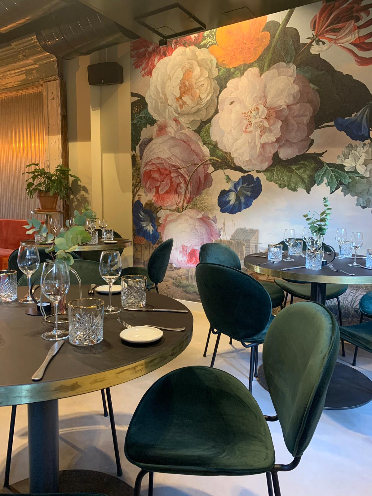
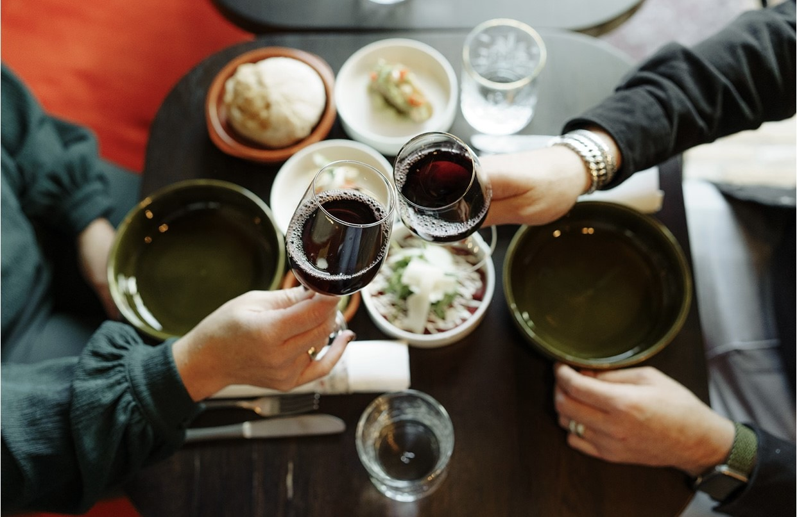
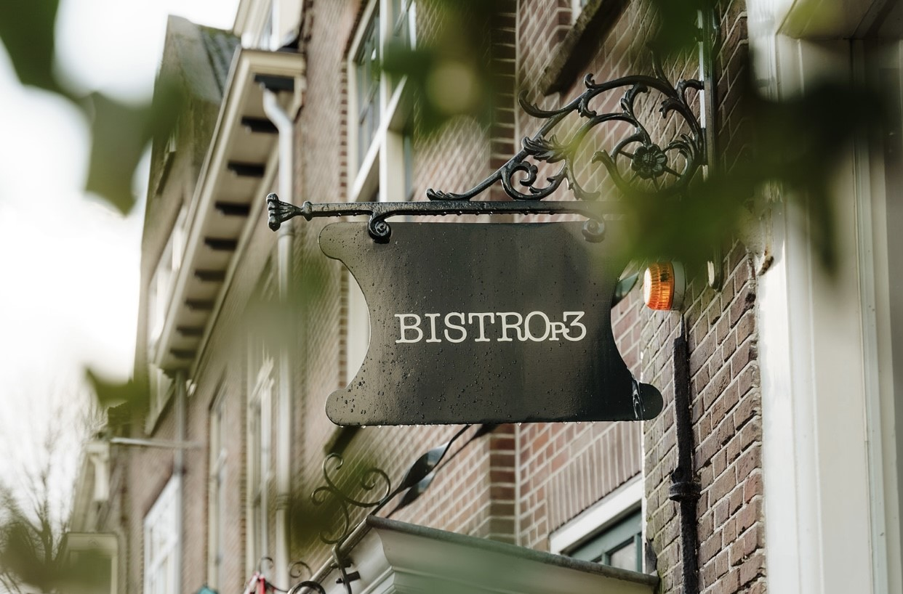
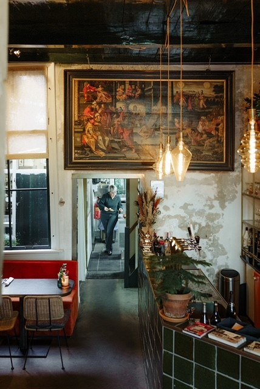
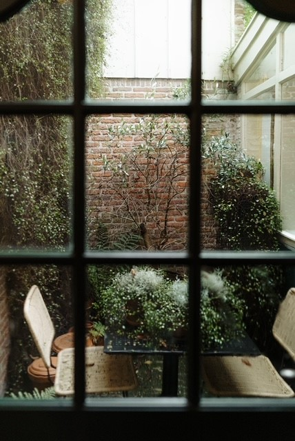
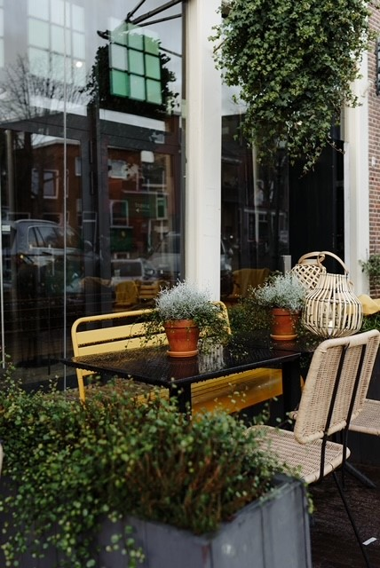
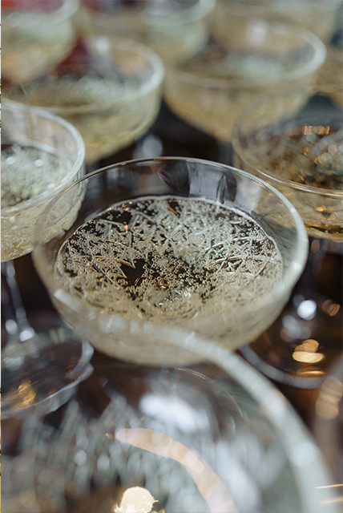

Kaasmarkt 3, bij de haven van Medemblik
Niet zomaar een bistro in Medemblik.
Lunch en diner in een voormalig VOC-pand: kreeft, steak tartaar, sliptong en Hollandse kazen, aan tafels tussen de bloemen.
Donderdag t/m zondag open
Lunch- en dinerkaart
Gewoon even lekker lunchen en/of dineren? Hieronder vindt u onze lunch- en dinerkaart.
- ZuurdesembolVan de echte Bakker Swart, met hummus en kerrie7,50
Miniature
- OesterCabernet sauvignon · 1 stuk4,00
- Pata negraToast15,75
- Steak tartaar briocheEidooier, kappertjes, cornichons · 2 stuks8,50
- Rivierkreeftjes briocheVenkel, dragon · 2 stuks8,50
- Avocado briocheChilivlokken, popcorn · 2 stuks8,50
- KipbitterballenMosterdmayonaise · 4 stuks8,50
- KreeftenbitterballenCitroenmayonaise · 4 stuks8,50
- Kipgyoza'sHoisin · 4 stuks8,50

Lobster
- KreeftensoepRivierkreeft, kerrieroom, zeekraal14,75
- ½ KreeftGegrild, citroenmayonaise, kreeftensaus27,50
- 1/1 KreeftGegrild, citroenmayonaise, kreeftensaus53,00
- ½ Kreeft in 3 bereidingenTempura, gegrild, mayonaise31,50
Voor
- Pompoen tatakiSesam, chilimayonaise15,50
- Steak tartaarAmsterdams zuur, ei, kappertjes16,75
- Huisgerookte zalmBlini's, crème fraîche, haringkaviaar16,50
- Caesar tacoKip, avocado, serranoham15,75
- Gamba tacoGamba, salsa, koriander15,75
- EendenleverOssenworst, brioche, sjalottenjam17,50
Hoofd
- KnolselderijSjalottenjam, meloes ui24,50
- SliptongBoter, citroen, peterselie · 2 stuks25,50
- TonijnspiesSesam, XO-saus, bosui27,50
- Runder steak 250 gram (Taurus Gold)Chimichurri32,50
- Kalfsribeye 225 gramBeurre café de Paris, padron30,50
- KalfsgehaktbalEendenlever, desem, balsamico27,50
Side dish
- FrietDragon, mayonaise, Parmezaan5,75
- Patatas bravasAioli, tomaat6,50
- SaladeCroutons, caesardressing, Parmezaan6,00
- SpitskoolKerrie, harissa, bieslook7,00
- RisottoPaddenstoelen, rucola7,50
Fromage
- Hollandse kazenOssekop, Grietje uit Ouddorp, Old Holland superieur, Oudwijker fiore, Blauw klaver; toast, notenbrood, vijg15,75
- Crème brûlée11,00
- MillefeuilleChocolademousse, pistache, karamel11,00
- Dame blanchePot van 500 ml vers gedraaid vanille-ijs, slagroom en warme chocoladesaus, voor 2 personen of meer18,50
Prijzen in euro's. Heeft u een allergie of dieetwens? Laat het ons weten bij het reserveren.

In een voormalig VOC-pand, vlak bij de haven
Sinds 1 april 2019 hebben wij onze deuren geopend en verwelkomen wij u graag in onze bistro op de Kaasmarkt 3 in Medemblik. Bij ons kunt u genieten van een lekkere lunch of een heerlijk diner.
Op zaterdag en zondag bent u vanaf 13:00 uur welkom voor de lunch, en van donderdag tot en met zondag vanaf 18:00 uur voor het diner. Zien wij u snel?




Openingstijden
| Maandag | Gesloten |
|---|---|
| Dinsdag | Gesloten |
| Woensdag | Gesloten |
| Donderdag | Diner vanaf 18:00 |
| Vrijdag | Diner vanaf 18:00 |
| Zaterdag | Lunch vanaf 13:00, diner vanaf 18:00 |
| Zondag | Lunch vanaf 13:00, diner vanaf 18:00 |
Reserveren
Reserveer online voor de lunch of het diner, of bel ons. Let op: op maandag, dinsdag en woensdag zijn wij gesloten.
Liever even bellen? 0227 209 001
BedbijBistro
Eindelijk is het zover: onze B&B is geopend. Boven BistrOp3 hebben we een prachtig appartement gerenoveerd tot Bed and Breakfast. Nu kunt u stijlvol overnachten na een heerlijke avond bij ons.
Meer over de B&B en boeken